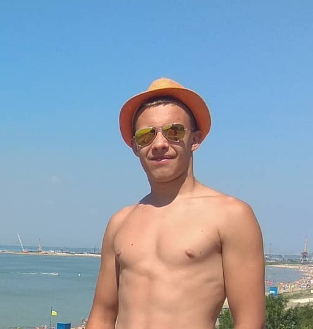
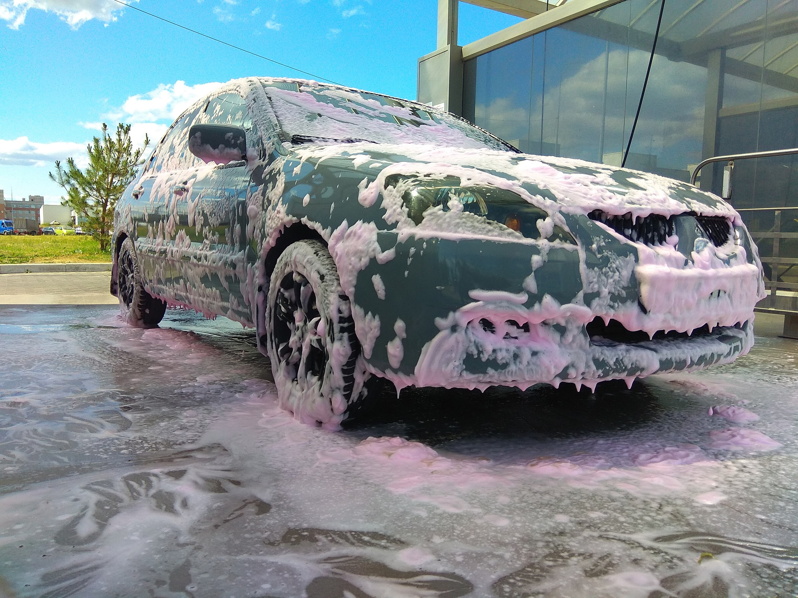

Мы с вами уже поздоровались на главной странице!
Давайте теперь познакомимся. Меня зовут Алексей Антонов.
Я учусь в одном из ВУЗов северной столицы нашей замечательной страны России. Да, я учусь в СпбГУАП, в городе Санкт-Петербург. Я хочу стать IT-специалистом.
Если говорить о хобби, то я люблю баскетбол - это самая зрелищная игра с мячом.
Одна из моих слабостей - машины, я просто обажаю кататься с музыкой по ночному городу! Страсть к управлению ТС у меня появилаась ещё в подростковом возрасте, когда мне подарили мопед.
Вообще все началось именно с мопеда, копаясь в нём у меня появилась любовь к физике. Так я стал технарём!
Кстати! Ещё я пишу тексты для песен, которые сам исполняю.
Успехи небольшие, но это же только начало!
У меня есть песни, которые официально выложены на цифровые площадки. Их вы можете найти в интернете (исп.: Alexeevich).
Поступив в ВУЗ я немного оставил это дело, но все равно планы по развитию себя в этой сфере остаются в силе и появляются новые.
О своей личной жизни я рассказывать не буду - на то оно и личное!
Надеюсь, просмотрев все разделы моего первого сайта - вы оценили их по достоинству!